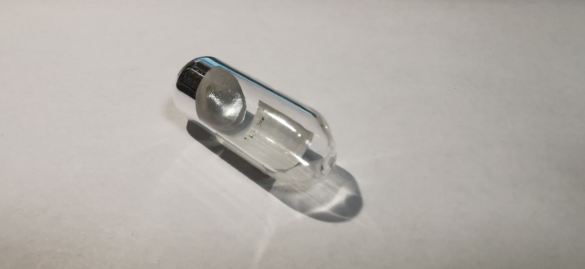
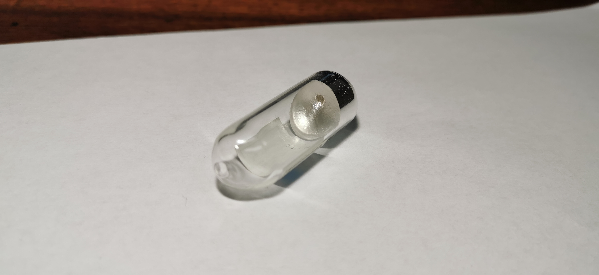
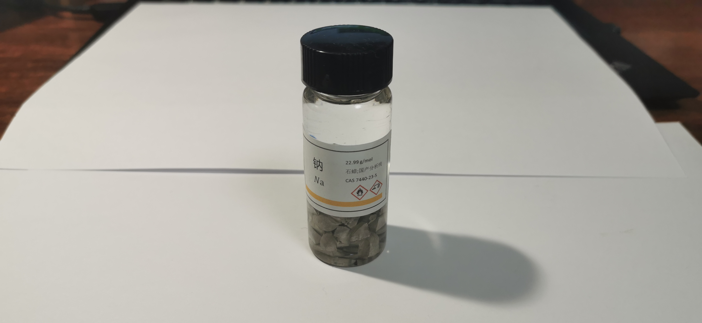
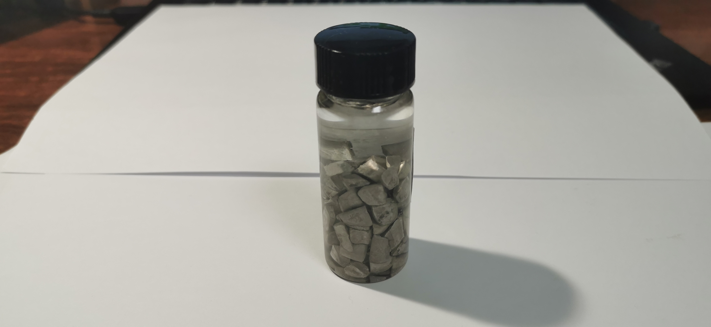

钠
2019.5 钠镜 99.8% 来自冥灵  
光亮钠：我们在初中就学过钠在没有氧化前是光亮的银白色，这种没有金属光泽的银白色还是很少见的。冥灵的钠镜是钠收藏最初级的样品（虽然如今由于管制力度的加大，冥灵已经不再出售钠），这正是因为钠质软容易粘连，但钠在室温下是固体，因此钠块才是钠收藏的首选，为此贴吧及群中大佬也在尝试玻封钠块甚至钠立方。当然，18年曾经爆红圈内的俄罗斯breakseal钠也是我十分想要的。
2019.10 试剂钠
 国产分析纯的钠，现在的管控程度下甚至比收藏钠更难得。（误）